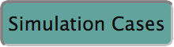

There are multiple ways to create a new CFD Simulation case. With the CWE Tool you may
After a short wait, the new case will be available for you to run. You can select it by returning to the  tab.
Continue to Step 3: Create a Mesh
Continue to Step 3: Create a Mesh